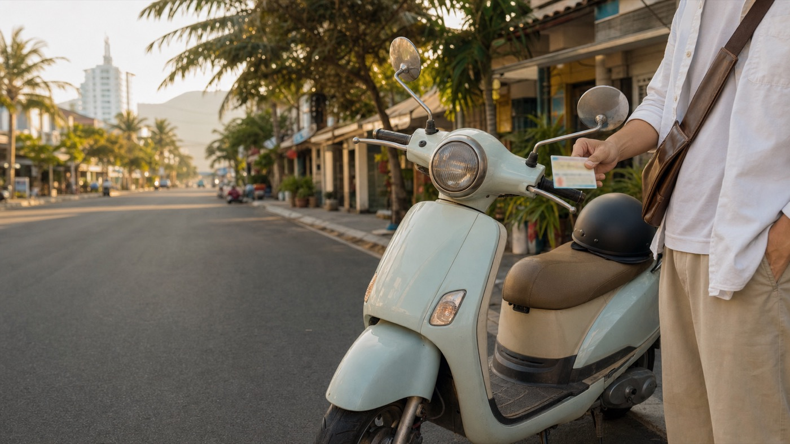
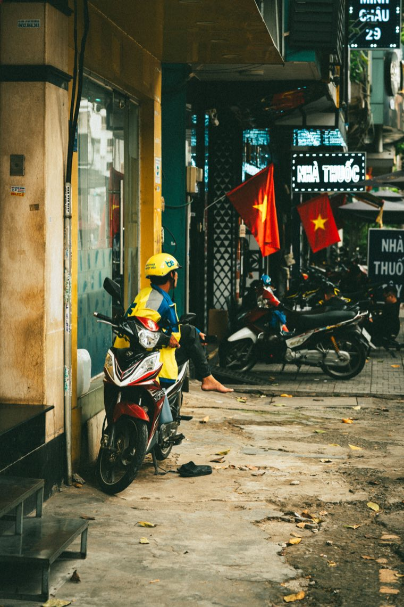

Байк 50cc кажется простым: купил, надел шлем и поехал. Но документами он всё равно остаётся транспортным средством. Один из документов, который стоит держать в порядке, — страховка гражданской ответственности. Она не делает езду «без риска», но помогает правильно пройти проверку и не остаться один на один с последствиями ДТП.
Во Вьетнаме обязательная страховка гражданской ответственности распространяется на владельцев механических транспортных средств, включая мотоциклы и xe gắn máy — категорию, куда обычно относится бензиновый байк до 50cc. Это не «дополнительная опция для туриста», а отдельный документ на транспортное средство.
Правила и требования могут меняться, поэтому перед покупкой или долгой поездкой проверяй актуальный срок и условия у официальной страховой. Основой регулирования остаётся Постановление Правительства №67/2023/NĐ-CP.
Обязательная страховка — это прежде всего ответственность перед третьими лицами. Она может работать, когда из-за байка пострадали другой человек, его здоровье или имущество. Это не каско: она не означает, что страховая автоматически оплатит царапины на твоём байке, украденный шлем или любой личный ремонт.
Поэтому не надо покупать байк, успокаивая себя одной бумажкой. Нормальная безопасность — это исправные тормоза и свет, шлем, аккуратная езда, документы и понимание, кому звонить при проблеме.

Не рассчитывай, что бумага от прошлого владельца автоматически решит твой вопрос. Если есть сомнения, проще уточнить у страховой и оформить действующий полис на понятных условиях. Это мелочь по сравнению с ценой самого байка и последствиями аварии.
Если ты не уверен в языке или обстоятельствах, не подписывай непонятные бумаги на месте. Сначала позвони человеку, который сможет перевести и помочь разобраться.
Для обычной поездки держи в понятном месте регистрацию байка, действующий страховой сертификат и контакт страховой. Сделай фото документов в телефоне, но не полагайся только на них: оригиналы или законно принятый формат нужны по правилам конкретной проверки.
Для нас байк — не просто красивая карточка в каталоге. Перед продажей мы проверяем документы, состояние, базовую технику и объясняем покупателю, что он получает. Если нужен разбор 50cc по документам, прочитай эту статью; о спокойной покупке из другого города — наш гид о доставке в Нячанг.
Смотреть байки в Нячанге → Как купить у нас →
Материал носит справочный характер и не заменяет индивидуальную юридическую или страховую консультацию.